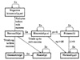
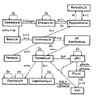

| Previous | Table of Contents | Next |
Figures 29.1 and 29.2 summarize the relationships among various discrete and continuous distributions, respectively. In the figures, the relationships are indicated alongside the arrows between the distribution. A symbol x is used to denote variates of the distribution where the arrow starts. Thus, for example, the condition ςx alongside the arrow from the Bernouilli to the binomial distribution in Figure 29.1 indicates that the sum of Bernoulli variates has a binomial distribution. Similarly, as probability p tends to zero, the binomial distribution becomes close to a Poissson distribution, which for λ greater than 9 can be approximated by a normal distribution, and so on. Normal distribution, although not a discrete distribution, has been included in Figure 29.1 to provide a link between the discrete distributions of Figure 29.1 and the continuous distributions of Figure 29.2.

FIGURE 29.1 Relationships among discrete distributions.

FIGURE 29.2 Relationships among continuous distributions.
There are a number of good books and published papers on simulations. Law and Kelton (1982) and Bratley, Fox, and Schrage (1986) provide a good treatment of most topics discussed here. Lavenberg (1983) discusses transient removal, variance estimation, and random-number generation.
Several books cover individual simulation languages. For example, GPSS is explained by O’Donovan (1980) and Bobillier et al. (1976), SIMSCRIPT II by CACI (1983) and Markowitz et al. (1963), SIMULA by Birtwistle et al. (1973), Dahl et al. (1982), and by Franta (1977), and GASP by Pritsker and Young (1975).
Sherman and Browne (1973) discuss the advantages and disadvantages of trace-driven computer simulations.
Adam and Dogramaci (1979) include papers describing the simulation languages SIMULA, SIMSCRIPT, and GASP by their respective language designers. Bulgren (1982) discusses SIMSCRIPT and GPSS.
For discussions on event-set algorithms, see Franta and Maly (1977), Wyand Vaucher and Duval (1975).
Crane and Lemoine (1977) explain regenerative simulations. Mitrani (1982) and Rubinstein (1986) provide a good discussion on variance reduction techniques. See Law (1983) for a survey of various simulation output analysis techniques.
Knuth (1981, Vol. 2) has a detailed discussion on random-number generation and testing. The idea of LCGs was first proposed by Lehmer (1951). The generators used in Equations (26.5) and (26.6) are from Greenberger (1961). multiplicative LCG in Equation (26.7) was first proposed by Lewis, Goodman, and Miller (1969). Park and Miller (1988) provide an interesting discussion on its implementation. They also discuss problems with other popular generators as discussed in Section 26.6. The second generator of Exercise 26.11 is from Lamie (1987).
For additional discussions on generating q-bit words using generalized feedback shift registers and their properties see Bright and Enison (1979), Fushimi and Tezuka (1983), Fushimi (1988), and Tezuka (1987). For a detailed discussion of shift register sequences see Golomb (1982).
Kreutzer (1986) provides a number of ready-made Pascal routines for common simulation tasks such as event scheduling, time advancing, random-number generation, and others.
Hastings and Peacock (1975) list all the important formulas related to commonly used distributions, their generation, and their relationship to other distributions. See Pasupathy (1989) for an interesting discussion on normal distribution. Hastings, Jr. (1955) gives formulas for approximating normal quantiles.
The Society for Computer Simulations has published several compendiums of papers on distributed simulation and knowledge-based simulations. For example, see Unger and Fujimoto (1989) and Webster (1989).
Current areas of research in simulation include distributed simulations, knowledge-based simulations, simulations on microcomputers, object-oriented simulation, graphics and animation for simulations, and languages for concurrent simulations. Of these, the first two areas are highly active and are briefly described here.
The discrete-event simulations discussed in this book are sequential simulations because the events are processed sequentially. The events cannot be executed efficiently in parallel on multiprocessor systems because there are two global variables that are shared by all processes: the simulation clock and the event list. An alternative to parallel execution is to use the so-called distributed simulation approach, which does not use these global variables. In this approach, which is also known as concurrent simulation or parallel simulation, the global clock times are replaced by several (distributed) “channel clock values,” and the events are replaced by messages that are sent between various processes via effor-free channels. This allows a simulation to be split among an arbitrary number of computer systems or processors. However, it also introduces the problem of deadlock. A number of schemes for deadlock detection, deadlock recovery, and deadlock prevention have therefore been proposed. Readers interested in this topic are encouraged to read an excellent survey by Misra (1986) and to follow the references cited therein. See also Wagner and Lazowska (1989).
Another area of current research in simulation modeling is that of knowledge-based simulation. Techniques of artificial intelligence, in particular, the expert system, are being used for simulation modeling. These techniques allow the user to specify the system at a very high level and to ask questions that are interpreted intelligently by the simulation system, which carries out the required simulation experiments automatically. Attempts are underway to provide automatic verification and validation of simulation models, automatic design of experiments, as well as data analysis and interpretation. For examples of two such systems, see Ramana Reddy et al. (1986) and Klahr and Fought (1980).
| Previous | Table of Contents | Next |
){kind=link}
){kind=link}
){kind=link}
){kind=link}